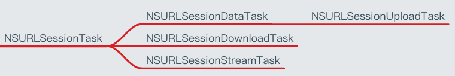
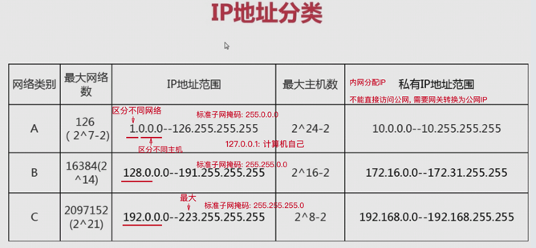
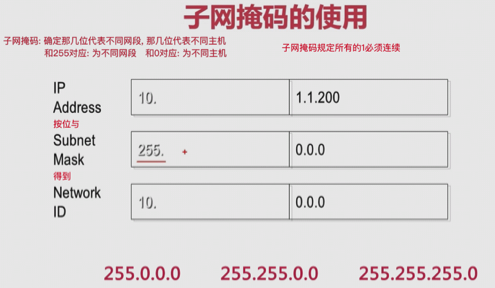
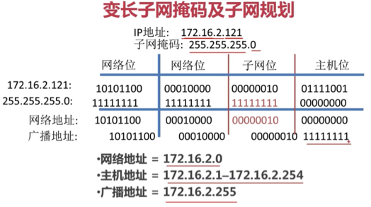

iOS 监测网络状态
Thu 11 May 2017 by Little Captain为什么要监听
- 让用户了解自己的网络状态，防止一些误会, 怪应用无能
- 根据用户的网络状态进行智能处理，节省用户流量，提高用户体验
- WIFI\3G网络：自动下载高清图片
- 低速网络：只下载缩略图
- 没有网络：只显示离线的缓存数据
监测网络状态
- 在网络应用中，需要对用户设备的网络状态进行实时监控
- 苹果官方提供了一个叫Reachability的示例程序，便于开发者检测网络状态
- 使用步骤
- 添加框架SystemConfiguration.framework
- 添加源代码(Reachability.h 和 Reachability.m)
- 包含头文件(Reachability.h)
- 实际开发中一般都使用AFNetworking监测
iOS 网络-HTTP
Thu 11 May 2017
by Little Captain
基本概念
如何找到服务器?
- 客户端通过URL找到想要连接的服务器
URL
- Uniform Resource Locator : 统一资源定位符
- 通过1个URL，能找到互联网上唯一的1个资源
- 互联网上的每个资源都有一个唯一的URL
- URL就是资源的地址、位置
URL的基本格式
- 协议://主机地址/路径
- 协议 : 不同的协议，代表着不同的资源查找方式、资源传输方式
- 主机地址 : 存放资源的主机（服务器）的IP地址（域名）
- 路径 : 资源在主机（服务器）中的具体位置
URL中常见的协议
HTTP
- 超文本传输协议
- 访问的是远程的网络资源
- http://
- http协议是在网络开发中最常用的协议
file
- 访问的是本地计算机上的资源
- file://
- 不用加主机地址
mailto
- 访问的是电子邮件地址
- mailto:
FTP
- 访问的是共享主机的文件资源
- ftp://
TCP/IP协议簇
- 通常意义上，我们使用的网络是在TCP …
iOS 网络-NSURLSession
Thu 11 May 2017
by Little Captain
Task的类型

使用步骤
- 使用NSURLSession对象创建Task
- 执行Task
常用方法
- sharedSession : 获得共享的Session
- sessionWithConfiguration : 自定义Session
NSURLSessionTask
常见方法
- suspend, 暂停
- resume, 恢复
- cancel, 取消
常用属性
- error, 错误
- response, 响应
NSURLSessionDownloadTask
常见方法
- cancelByProducingResumeData
iOS 网络-NSURLConnection
Thu 11 May 2017
by Little Captain
作用
- 负责发送请求，建立客户端和服务器的连接
- 发送数据给服务器，并收集来自服务器的响应数据
常用相关类
NSURL
- 请求地址
- 有时必须进行百分号转码, 使用方法stringByAddingPercentEscapesUsingEncoding
NSURLRequest
- 一个NSURLRequest对象就代表一个请求
- 包含的信息
- 请求方法
- 请求头
- 请求体
- NSURL对象
- 请求超时
- ...
NSMutableURLRequest
- setTimeoutInterval
- 超过这个时间就算超时，请求失败
- 设置请求超时等待时间
- setHTTPMethod
- 设置请求方法
- GET或POST
- setHTTPBody
- 设置请求体
- setValue:forHTTPHeaderField:
- 设置请求头
使用步骤
1. 创建一个NSURL对象
- 设置请求路径
2. 创建一个NSURLRequest对象
- 设置
- NSURL对象
- 请求头
- 请求体
3. 发送请求
NSURLConnection常见的发送请求方法
同步请求
- sendSynchronousRequest
异步请求
根据对服务器返回数据的处理方式的不同，又可以分为2种
block回调 …
read moreiOS 网络-基础
Thu 11 May 2017
by Little Captain
学习网络编程的意义
- 在移动互联网时代，移动应用的特征
- 几乎所有应用都需要用到网络
- 只有通过网络跟外界进行数据交互、数据更新，应用才能保持新鲜、活力
- 如果没有了网络，也就缺少了数据变化，无论外观多么华丽，终将变成一潭死水
- 网络编程是一种实时更新应用数据的常用手段
- 网络编程是开发优秀网络应用的前提和基础
优秀移动应用的标准
- 良好的UI
- 良好的用户体验
- 实时更新的数据
App 分类
- 新闻
- 视频
- 音乐
- LBS
- 电商
- 社交
网络基本概念
Client
- 客户端
- 移动应用
Server
- 服务器
- 为客户端提供服务、提供数据、提供资源的机器
按照软件开发阶段来分，服务器可以大致分为2种
远程服务器
- 别名
- 外网服务器
- 正式服务器
- 使用阶段, 应用上线后使用的服务器
- 使用人群, 供全体用户使用
- 速度, 取决于服务器的性能、用户的网速
本地服务器
- 别名 …
一款基于 AFNetworking 封装的网络框架
Tue 09 May 2017
by Little Captain
AFNetworking 存在的问题
如果你的项目中使用了 AFNetworking, 就一定会出现内存泄漏的问题. 这个是我在用做测试的时候发现的.
问题重现
- 安装 AFNetworking, 使用 AFNetworking 做网络请求
- 使用 Debug Memory Graph 查看内存引用关系
Debug Memory Graph(Xcode 8.0+)

AFNetworing 的一些对象被 Xcode 标记

图上结果表示: 这些对象无法被释放, 即内存泄漏.
- 使用 Instrument 测试得到类似结果
解决问题
失败的解决办法
- 控制器退出时, 取消所有任务
- 使用 weak strong dance
- ...
成功的解决办法 …
read more网络模型
Sun 07 May 2017
by Little Captain
OSI七层模型
1. 应用层
- 数据单位: APDU
- 作用: 针对用户(应用程序)
2. 表示层
- 数据单位: PPDU
- 作用: 数据的编码、加密和解压缩等
3. 会话层
- 数据单位: SPDU
- 作用: 确定数据是否向下传递
4. 传输层
- 数据单位: TPDU
- 作用: 确定数据是否可靠; 确定网络端口是否可靠; 查错、校验; 流量控制等等
5. 网络层
- 数据单位: 报文, 报文中有 IP 地址
- 作用: 确定IP地址编码
6. 数据链路层
- 数据单位: 帧, 帧中最重要的数据就是MAC地址
- 作用: MAC地址编码
7. 物理层
- 数据单位 …
网络基本概念
Sun 07 May 2017
by Little Captain
物理地址
- 又名: MAC地址, 网卡硬件地址
- 作用: 用于局域网内的通信
- 48位
IP地址
- IP 协议: Internet Protocol
- IP 协议版本: IPv4(不定长包头、解析耗时); IPv6(定长包头)
- 32位: 8位一组共4组(X1.X2.X3.X4, 0.0.0.0->255.255.255.255)
- 分类
- 用 IP 的第一位对网络进行分类
- 每个网段的主机数用子网掩码确定
- 每个网络的第一个地址代表网络本身
- 每个网络的最后一个地址代表网络的广播地址(广播地址是专门用于同时向网络中所有工作站进行发送的一个地址)

- 子网掩码


端口
- 属于传输层: 在传输层包头中(TCP头, UDP头)
-
端口号
- IP全球唯一类似于门牌号: 确定服务器位置 …